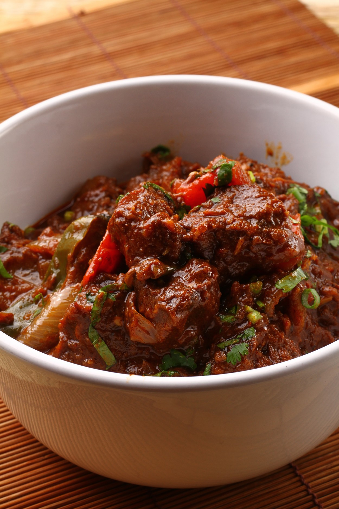

Eid Al-Fitr Dish
Lamb Kuzi
.jpg )

Ingredient
Main Ingredient:
- 1 Kg Mutton, cut into cubes
- 1 teaspoon of Turmeric Powder
- 3 pieces of Red Onion
- 7 pieces of garlic
- 600gm fried onions
- 60g Raisins
- 4 tablespoons of Tomato Sauce
- 2 tablespoons of Ghee
- ¾ Cup of Cooking Oil
- 1 Cup of Water
- 400ml Liquid Milk
- 3 pieces of Lime Juice
- Salt and Sugar to Taste
- 1 Ginger
- 1½ tablespoons of coriander powder
- 2 teaspoons of Cumin
- 1 teaspoon of White Cumin
- 1 teaspoon of White Pepper
- 1 stick Cinnamon Bark
- 5 pieces of Cardamom
- 5 pieces of Clove
- 3 pieces of Lawang Flower
Instructions
- First coat the lamb with turmeric powder until smooth. Then mix fried onions with liquid milk and lime juice. Mix well.
- Heat the oil in a pan and fry the raisins for a while. Remove and set aside first.
- Using the same oil, add ghee and mutton. Fry half cooked to remove the smell, remove and set aside first.
- Next add ginger, coriander powder, cumin, cumin, white pepper, cinnamon bark, cardamom, cloves, star anise and a little water into the blender. Blend until smooth.
- Heat the oil in a pan and fry the red onion slices, garlic and ground ingredients until the oil rises. Then add the lamb meat, liquid milk mixture, tomato sauce, salt and sugar to taste. Add water if necessary and cook over medium heat until the meat is tender and the sauce thickens.
- Finally, sprinkle raisins and fried cashews and lamb kuzi ready to be served with hot rice or plain bun bread. Good luck!
.png)

.png)
.png)